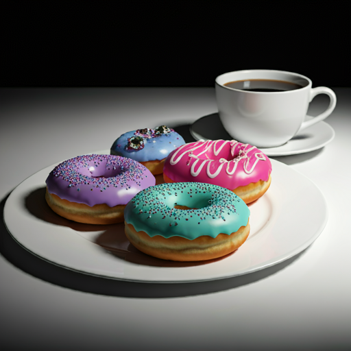
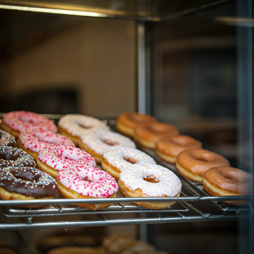
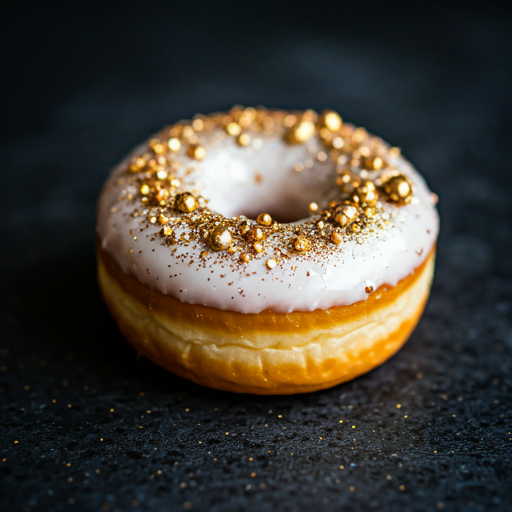

- 
- 
- 

Visión Ser la marca líder en la creación de donas gourmet que combinan sabores únicos con un ambiente vibrante y festivo, convirtiéndonos en el destino preferido para quienes buscan una experiencia dulce y divertida. Queremos ser reconocidos no solo por la calidad de nuestros productos, sino también por la alegría y la comunidad que fomentamos en nuestros locales.
Misión Nuestra misión es ofrecer donas excepcionales, elaboradas con ingredientes de la más alta calidad y un toque innovador, que deleiten a nuestros clientes en cada bocado. Además, buscamos crear un ambiente acogedor y animado, donde cada visita sea una celebración. A través de un servicio al cliente excepcional y una conexión auténtica con nuestra comunidad, nos comprometemos a hacer que cada experiencia en Donas Diamonds & Dancefloors sea memorable.
Su origen nace de la fusión entre lo dulce y lo lujoso, una combinación que une dos mundos llenos de brillo. Donas Diamonds & Dancefloors es su nombre, y su existencia comenzó en una pista de baile vibrante, rodeada de luces resplandecientes y las risas de quienes disfrutaban la noche. Observaba cómo las personas no solo se deleitaban con el lujo, sino que también buscaban algo más: un toque de alegría que pudieran saborear, algo que fuera tan visualmente atractivo como delicioso.